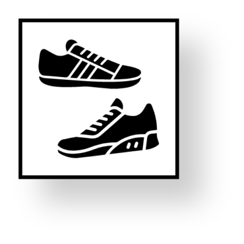

Nuestros Productos
La sección de productos de nuestra tienda de calzado es un escaparate de calidad y estilo. Nos enorgullece ofrecer una extensa selección de calzado de alta calidad, que combina artesanía excepcional con diseños modernos y a la moda.
Desde zapatos elegantes hasta zapatillas deportivas, cada par de calzado en nuestra colección ha sido cuidadosamente seleccionado para garantizar durabilidad, comodidad y, por supuesto, un toque de elegancia. Nuestra variedad de modelos abarca desde opciones clásicas hasta las últimas tendencias, asegurando que encuentres el par perfecto para cualquier ocasión. En nuestra tienda, la calidad es una prioridad. Trabajamos con marcas reconocidas y artesanos expertos para ofrecer calzado que no solo se ve increíble, sino que también se siente increíble al usarlo. Los materiales de primera calidad y la atención al detalle son la esencia de cada par que ofrecemos.
Además de la calidad, nos esforzamos por brindar una experiencia de compra excepcional. Nuestra página web está diseñada para que encuentres fácilmente lo que buscas, con imágenes detalladas y descripciones informativas. Nos apasiona ayudarte a descubrir el calzado perfecto que se adapte a tu estilo y personalidad. Explora nuestra colección para descubrir la fusión perfecta entre moda y funcionalidad. Ya sea que busques un elegante par de zapatos para una ocasión especial, unas cómodas zapatillas para el día a día o cualquier otra cosa en el espectro del calzado, estamos seguros de que encontrarás algo que te encante.
Bienvenido a nuestra tienda, donde la calidad, la variedad y el estilo se unen para ofrecerte una experiencia única al elegir tu próximo par de calzado.
ZAPATOS
Hombre / Mujer
Para Hombres: Descubre una variedad de estilos que van desde los clásicos y atemporales hasta los más modernos y vanguardistas. Desde zapatos formales que complementan tu look de negocios hasta zapatillas deportivas diseñadas para la máxima comodidad, nuestra selección para hombres refleja la versatilidad y el buen gusto. Cada par está confeccionado con materiales de alta calidad y detalles meticulosos, garantizando durabilidad y estilo duradero. Desde mocasines elegantes hasta botas resistentes, nuestra colección abarca todas las ocasiones y preferencias de moda masculina.
Para Mujeres: Explora una gama diversa de estilos que realzan tu feminidad y expresan tu personalidad única. Desde elegantes tacones hasta cómodas sandalias, nuestros zapatos para mujeres están diseñados para adaptarse a cualquier ocasión y satisfacer todos los gustos. Ya sea que busques la sofisticación de unos stilettos, la versatilidad de unas botas de moda o la frescura de unas zapatillas casuales, cada par está confeccionado pensando en la mujer moderna y activa. La atención al detalle y la elección de materiales garantizan no solo estilo, sino también la comodidad que necesitas a lo largo del día. En nuestra colección de zapatos, la moda se encuentra con la funcionalidad, ofreciendo opciones que destacan tu individualidad mientras brindan el soporte y la calidad que mereces. Sea cual sea tu estilo, estamos aquí para ayudarte a dar cada paso con confianza y estilo.
SNEAKERS
Hombre / Mujer
Para Hombres: Descubre la última moda en sneakers para hombres, desde diseños clásicos reinventados hasta modelos vanguardistas que destacan en cualquier ocasión. Ya sea que busques un look urbano, deportivo o casual, nuestra colección tiene opciones que se adaptan a cada estilo de vida. Fabricados con materiales de primera calidad y atención meticulosa al detalle, nuestros sneakers para hombres te ofrecen una combinación perfecta de estilo y confort.
Para Mujeres: Eleva tu estilo con nuestra asombrosa selección de sneakers para mujeres. Desde diseños elegantes y femeninos hasta opciones más audaces y deportivas, cada par ha sido seleccionado para destacar la individualidad y la moda de la mujer moderna. Experimenta la fusión perfecta entre comodidad y estilo en cada paso. Nuestros sneakers para mujeres son la opción perfecta para complementar cualquier atuendo, ya sea que estés en movimiento o simplemente disfrutando de tu tiempo libre con un toque de elegancia casual.
SANDALIAS

Hombre / Mujer
Para Hombres: Explora nuestra selección de sandalias diseñadas específicamente para el hombre moderno. Desde estilos casuales para paseos relajados hasta opciones más sofisticadas para ocasiones especiales, cada par ha sido seleccionado cuidadosamente para garantizar calidad, confort y moda. Ya sea que busques una opción con correas ajustables para un ajuste personalizado o detalles de cuero para un toque refinado, nuestra colección de sandalias para hombres ofrece versatilidad y estilo en cada paso.
Para Mujeres: Sumérgete en la elegancia y la libertad con nuestras encantadoras sandalias para mujeres. Desde diseños delicados hasta opciones audaces y vanguardistas, nuestras sandalias están diseñadas para complementar cualquier estilo. Con materiales de alta calidad y detalles cuidadosamente elaborados, cada par resalta la feminidad y la comodidad. Descubre opciones que van desde sandalias planas perfectas para el día a día hasta diseños más elevados que añaden un toque de sofisticación a tus conjuntos más elegantes.
BOTAS
Hombre / Mujer
Botas para Hombres: Sumérgete en la masculinidad y estilo contemporáneo con nuestra selección de botas para hombres. Desde las clásicas botas de vestir hasta las resistentes botas de trabajo, cada par ha sido seleccionado cuidadosamente para ofrecer calidad superior y un toque de moda a tu guardarropa. Ya sea para un look casual o formal, nuestras botas para hombres combinan funcionalidad y estilo con maestría.
Botas para Mujeres: Encuentra la fusión perfecta de moda y comodidad en nuestra colección de botas para mujeres. Desde elegantes botas hasta las últimas tendencias en botines, cada par ha sido diseñado pensando en la mujer moderna. Ya sea que busques un estilo clásico que perdure en el tiempo o algo más atrevido para destacar, nuestras botas para mujeres te llevarán con gracia y confianza a cualquier lugar.
ZAPATOS
Niños / Niñas
Nuestra colección de calzado para niños y niñas es una expresión encantadora de moda, comodidad y durabilidad. Estamos dedicados a proporcionar opciones de calzado que no solo sigan las últimas tendencias, sino que también cuiden los pequeños pies en crecimiento. Descubre una variedad de estilos diseñados pensando en la diversidad de personalidades y actividades de los niños. Desde zapatos casuales hasta opciones más formales, cada par ha sido seleccionado con atención a la calidad y la seguridad, priorizando materiales suaves y resistentes que permitan el juego y la exploración.
Nuestros zapatos para niños y niñas no solo son adorables, sino que también están diseñados para resistir la energía y la actividad diaria. Con detalles divertidos, colores vibrantes y diseños que capturan la imaginación, cada par cuenta una historia única. En nuestra tienda, comprendemos la importancia de encontrar calzado que se adapte a las necesidades cambiantes de los niños en crecimiento. Ya sea que estés buscando zapatos para una ocasión especial, zapatillas deportivas para la diversión diaria o calzado resistente para aventuras al aire libre, nuestra colección para niños y niñas ofrece opciones para cada ocasión.
SNEAKERS
Niños / Niñas
Explora nuestra exclusiva colección de sneakers diseñados especialmente para niños y niñas, donde la diversión y la comodidad se encuentran en cada paso. En nuestra tienda, entendemos la importancia de brindar opciones que no solo sigan las últimas tendencias de moda, sino que también cumplan con los estándares de calidad que los padres desean para sus pequeños.
Nuestros sneakers para niños y niñas son mucho más que simples zapatos; son compañeros de juegos, aventuras y exploración. Con una atención meticulosa a los detalles y una selección de materiales duraderos, garantizamos que cada par esté diseñado para resistir las travesuras diarias de los niños y niñas activos. Desde colores vibrantes hasta divertidos estampados y diseños encantadores, nuestra colección de sneakers ofrece una amplia variedad para que los más pequeños expresen su personalidad única. La comodidad es clave, y cada par está diseñado para adaptarse a los pies en crecimiento, proporcionando el soporte necesario para sus actividades diarias.